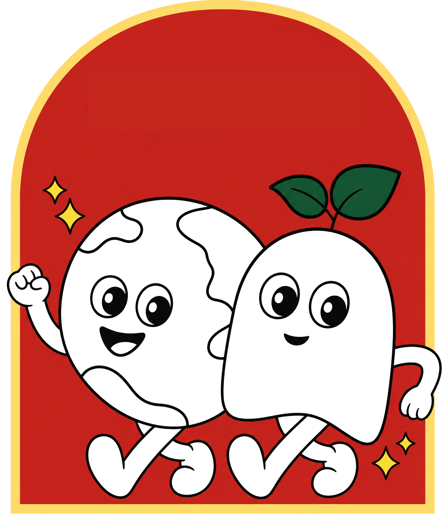

Campaigning for Change
Youth Pathways to Climate & Social Impact
A free, illustrated handbook for young people building campaigns that move the world — from first idea to lasting impact.

Request your copy
Tell us where to send the handbook.
We'll send you a fresh copy plus occasional campaign updates. No spam.
Click Get Your Copy Now! above to open the request form.
Read it online
Flip through the handbook
The full PDF, embedded below. Use the controls inside the viewer to navigate, zoom, or download.
Prefer a single page or full-screen? Open the PDF in a new tab.
About
Building Justice Together
This handbook has been created by youth-led groups in India's climate and social movements. It compiles over seven years of experience, offering insights into navigating impactful campaigns.
- The Campaign's Journey Pre Campaign, During Campaign, Post Campaign.
- Campaigning 101 Fundamentals of advocacy and the essential skills required to drive change.
- How Campaigns Take Shape Various phases of campaigning from setting goals to taking action.
- Campaign Research Tools Tools empower campaigners to transform information into action.
- Project Lead
- Bhawna Tanwar
- Copywriters
- Shravya Shruti and Bhawna Tanwar
- Designer
- Medha Kanjilal
- Editing & Proofreading
- Suhasini Srinivasaragavan